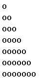

<!DOCTYPE html>
<html lang="en">
<head>
 <meta charset="UTF-8">
 <meta http-equiv="X-UA-Compatible" content="IE=edge">
 <meta name="viewport" content="width=device-width, initial-scale=1.0">
 <title>Lesson6</title>
 <link rel="stylesheet" href="css/style.css">
 <script src="./js/script.js"></script>

</head>
<body>
	<div class="wrapper">
 <main>
	<script>
		// minRangeNumber
		// maxnRangeNumber
		// sum
// const minRangeNumber =parseInt(prompt('minRangeNumber'))
// const maxRangeNumber =parseInt(prompt('maxRangeNumber'))
// let sum = 0
// for (let i = 0; i < 5;) {
// 	const randNum = minRangeNumber + Math.floor(Math.random()*(maxRangeNumber-minRangeNumber+1))
// 	if (randNum%2!==0){ 
// 		sum += randNum
// 		i++
// }
// }
// document.write(`Sum=${sum}`)

// Пуступово генеруються N чисел (-100 -100). Знайти макс і мін та середнє значення
// maxNumber
// minNumber
// midNumber
// numbersCount
// const numbersCount = parseInt(prompt('Кіл-ть чисел'))
// let sum = 0
// let maxNumber = -Infinity
// let minNumber = Infinity
// for (let i = 0; i < numbersCount; i++) {
// 	const randNum = 
// 	minNumber + 
// 	Math.floor(Math.random()*(maxNumber-minNumber+1))
// 	if (maxNumber<randNum) maxNumber = randNum
// 	if (minNumber>randNum) minNumber = randNum
// 	sum+=randNum
// }
// const midNumber = sum/numbersCount
// document.write(`midNumber = ${midNumber}, Max = ${maxNumber}, Min = ${minNumber}`)

// Поступово генерувати 100 випадкових чисел від 1 до 1000. Підрахувати яких чисел більше: парних, непарних
// evenNumber - кіл-ть парних
// oddNumber - кіл-ть непарних
// const minNumber = 1
// const maxNumber = 1000
// let evenNumber = 0
// let oddNumber = 0
// for (let i = 0; i < 100; i++) {
// 	const randNum = 
// 	minNumber + 
// 	Math.floor(Math.random()*(maxNumber-minNumber+1))

// 	if (randNum%2===0)evenNumber++
// 	else oddNumber++
// }
// document.write(`oddNumber:${oddNumber}, evenNumber:${evenNumber}`)

// вИвести високосні роки у вказаному діапазоні (між початковим і кінцевим роками)
// високосний - він кратний 4, але не кратний 100, а також якщо він кратний 400
// startYear
// endYear
// const startYear = parseInt(prompt('Початковий рік'))
// const endYear = parseInt(prompt('Кінцевий рік'))
// for (let year = startYear; year < endYear; year++) {
// 	if(year%4===0 && year%100!==0 || year%400==0)
// 	document.write(`year: ${year}`)
// }

// Вивести усі  трицифрові числа, де друга цифра завжди є 
// меншою або рівною за першу, а третя є меншою або рівною за другу 100-999
// for (let c1 = 1; c1 <= 9; c1++) {
// 	for (let c2 = 0; c2 <= c1; c2++){
// 		for (let c3 = 0; c3 <= c2; c3++){
// 			document.write(`${c1} ${c2} ${c3} <br>`)
// 		}
// 	}
// }

//  Вивести з кожного десятка (1-10, 11-20, 21-30.....91-100) по три випадкових парних числа
// rangeStart - 1
// rangeEnd - 10
// for (let rangeStart = 1, rangeEnd = 10;  rangeEnd <= 100; rangeStart+=10, rangeEnd+=10 ) {
// 	for (let i = 0; i < 3; ) {
// 		const randNum = 
// 		rangeStart + 
// Math.floor(Math.random()*(rangeEnd-rangeStart+1))
// if(randNum%2===0){
// 	document.write(`${randNum} <br>`)
// 	i++
// }
// 	}
// }

// Вивести 5 маркованих списків по 3 випадкових числа
// const rangeStart = 1, rangeEnd = 100
// for (let i = 0; i<5; i++) {
// 	document.write('<ul>')
// 		for (let u = 0; u<3; u++) {
// 			const randNum = 
// 		rangeStart + Math.floor(Math.random()*(rangeEnd-rangeStart+1))
// document.write(`<li>${randNum}</li>`)
// 		}
// 	document.write('</ul>')
// }

// Вивести 4 двомірні таблиці 5*6
// const rangeStart = 1, rangeEnd = 100
// for (let tableNumber = 0; tableNumber < 4; tableNumber++) {
// 	document.write('<table border="2px">')
// for (let rowNumber = 0; rowNumber < 5; rowNumber++){
// 	document.write('<tr>')
// 		for (let cellNumber = 0; cellNumber < 6; cellNumber++){
// 			const randNum = 
// 		rangeStart + Math.floor(Math.random()*(rangeEnd-rangeStart+1))
// 			document.write(`<td>${randNum}</td>`)
// 		}
// 		document.write('</tr>')
// }
// document.write('<table>')
// }

// Горизонтальну діаграму з 8 рандомними значеннями (0-100)
// const rangeStart = 0, rangeEnd = 100
// for (let i = 0; i < 8; i++){
// 	const randNum = 
// rangeStart + Math.floor(Math.random()*(rangeEnd-rangeStart+1))
// document.write(`<div style="height: 40px; width: ${randNum}%; margin-top: 10px; background-color: yellow;"></div>`)
// }

// Випадковим чином вивести у рандомних позиціях 10 зображень-смайликів
// const rangeStart = 0, 
// rangeEnd = 100
// for (let i = 0; i < 10; i++) {
// 	const left = 
// rangeStart + Math.floor(Math.random()*(rangeEnd-rangeStart+1))
// const top = 
// rangeStart + Math.floor(Math.random()*(rangeEnd-rangeStart+1))
// 	document.write(``
// 	)
	
// }

// Вивести радіо-кнопки для визначення того, скільки років людині у діапазоні (1-10, 11-20, 21-30...91-100)
// for (let startNum = 1, endNum = 10; startNum <=91; startNum+=10, endNum+=10) {
// document.write(`
// <input type="radio" name="age"/> ${startNum} - ${endNum} <br> <label> </label> `)
// }

// сформувати селект з парними числами від 2 до 20
// document.write(`<select>`)
// for (let i = 2; i <= 20; i+=2) {
// 	document.write(`<option value="">${i}</option>`)
// }
// 	document.write(`</select>`)

// Користувач вводить 2 символи у верх регістрі Сформувати два select з кодами 
// символів у заданому діапазоні та символи у заданому діапазоні
// const firstLetter = prompt('1а літера')
// const lastLetter = prompt('2а літера')
// const firstLetterCode = firstLetter.charCodeAt(0)
// const lastLetterCode = lastLetter.charCodeAt(0)
// document.write(`<select>`)
// for (let i = firstLetterCode; i <= lastLetterCode; i++) {
// 	document.write(`<option value="${i}">${i}</option>`)
// }
// 	document.write(`</select>`)
// 	document.write(`<select>`)
// for (let code = firstLetterCode; code <= lastLetterCode; code++) {
// 	document.write(`<option value="${code}">${String.fromCharCode(code)}</option>`)
// }
// 	document.write(`</select>`)

// Тільки позитивні емоції. З клави вводиться М - максимальна кіл-ть смайлів, які можна
// вивести. Комп випадково вибирає якесь із 4х наперед заданих. Серед них є сумний смайл
// 1. Якщо знаходимо сумний - зупинити
// 2. Якщо знаходимо сумний - пропустити
// 3. Якщо знаходимо сумний - вибрати наступний позитивний
// const smileNumber = parseInt(prompt('Максимальна кіл-ть смайлів'))
// const rangeStart = 1, 
// rangeEnd = 8
// for (let i = 0; i < smileNumber; i++) {
// 	const imgNumber = 
// rangeStart + Math.floor(Math.random()*(rangeEnd-rangeStart+1))
// if (imgNumber===5)
// break
// const imgPath = `./img/0${imgNumber}.jpg`
// document.write(``)
// }

// 2. Якщо знаходимо сумний - пропустити
// const smileNumber = parseInt(prompt('Максимальна кіл-ть смайлів'))
// const rangeStart = 1, 
// rangeEnd = 8
// for (let i = 0; i < smileNumber; i++) {
// 	const imgNumber = 
// rangeStart + Math.floor(Math.random()*(rangeEnd-rangeStart+1))
// if (imgNumber===5)
// continue
// const imgPath = `./img/0${imgNumber}.jpg`
// document.write(``)
// }

// 3. Якщо знаходимо сумний - вибрати наступний позитивний
// const smileNumber = parseInt(prompt('Максимальна кіл-ть смайлів'))
// const rangeStart = 1, 
// rangeEnd = 8
// for (let i = 0; i < smileNumber; i++) {
// 	let imgNumber = 
// rangeStart + Math.floor(Math.random()*(rangeEnd-rangeStart+1))
// if (imgNumber===5) imgNumber = 1
// const imgPath = `./img/0${imgNumber}.jpg`
// document.write(``)
// }

// Комп 3 рази випадковим чином вибирає початок і кінець проміжку (проміжок повинен
// знаходитись в межах від 1 до 100) Користувач вводить число і виграє, якщо число
// знаходиться у цьому проміжку, або розташтоване від нього (від лівого або правого краю) не більше
// ніж на 10 ((min-10) ---- (maxx+10))
// const rangeStart = 1, 
// rangeEnd = 100
// for (let i= 0; i<3; i++) {
// let minNumber = 
// rangeStart + Math.floor(Math.random()*(rangeEnd-rangeStart+1))
// let maxNumber = 
// rangeStart + Math.floor(Math.random()*(rangeEnd-rangeStart+1))
// // перевіряємо, чи часом minNumber>maxNumber
// if(minNumber>maxNumber){
// 	let tmp = minNumber
// 	minNumber=maxNumber
// 	maxNumber=tmp
// }
// const userNumber = parseInt(prompt('Ваше число?'))
// const resultMessage = userNumber>=minNumber-10 && userNumber<=maxNumber+10 ? 'Перемога' : 'Програш'
// alert(resultMessage)
// }

// Морський бій. Комп випадково розташовує одиночний корабель на полі розміром N*M
// Маючи К снарядів користува намагається потопити корабель
// const rowsNumber = parseInt(prompt('Вкажіть кіл-ть рядків')) // N
// const columnsNumber = parseInt(prompt('Вкажіть кіл-ть стовбців')) // M
// let missleNumber = parseInt(prompt('Вкажіть кіл-ть снарядів'))

// // випадковим чином розмістили корабель (визначили номер рядка і номер стовбця)
// const shipRowPosition = 1 + Math.floor(Math.random()*(rowsNumber-1+1))
// const shipColumnPosition = 1 + Math.floor(Math.random()*(columnsNumber-1+1))

// let userRow, userColumn
// do{
// 	userRow=parseInt(prompt('Номер рядка'))
// 	userColumn=parseInt(prompt('Номер стобця'))
// 	missleNumber--
// }while(!(userRow===shipRowPosition && userColumn===shipColumnPosition) && missleNumber>0)
// if(userRow===shipRowPosition && userColumn===shipColumnPosition)
// alert('перемога')
// else
// alert('програш')

// Ігровий автомат. Випадково вибираємо зображення у 3 позиціях
// Вибір у кожній позиції вибирається як одне з 4х зображень
// Вивести ці зображення і повідомити виграш користувачу
// (три перших зображення - 100грн, три других - 200, три третіх - 500)
// три четвертих зображення - 1000грн)
// Використати цикли ш і switch (для вибору зображення за номером)

// 1-1 --- 10^(1-1) --- 3
// 2-10 --- 10^(2-1) --- 30
// 3-100 --- 10^(3-1) --- 300
// 4-1000 --- 10^(4-1) --- 3000
// const rangeStart = 1, 
// rangeEnd = 4
// let sum = 0
// for (let i = 0; i < 3; i++) {
// let imgNum = rangeStart+Math.floor(Math.random()*(rangeEnd-rangeStart+1))
// 		document.write(``)
// 		sum+=Math.pow(10, imgNum-1) //10^imgNum-1
// 	}
// 	let win = 0
// switch (sum) {
// 	case 3:win= 100
// 		break;
// 	case 30:win= 200
// 		break;
// 	case 300:win= 500
// 		break;
// 	case 3000:win=1000
// 		break;
// }
// document.write(`Виграш ${win}`)

// Користувач поступово вводить показники температури протягом року. Знайти середню температуру
// let sum = 0
// const rangeStart = -20
// rangeEnd = 20
// let minTemperature = +Infinity
// let maxTemperature = -Infinity
// for (let i = 0; i < 365; i++) {
// let temperature = rangeStart+Math.floor(Math.random()*(rangeEnd-rangeStart+1))
// 	sum+=temperature
// 	if (temperature>maxTemperature) maxTemperature = temperature
// 	if (temperature<minTemperature) minTemperature = temperature
// }
// const average = sum/365
// document.write(`average=${average.toFixed(3)} max=${maxTemperature} min=${minTemperature}`)


// function getMax(num1, num2) {
// 	let result
// 	if(num1>num2) return num1
// 	else return num2
// 	return result
// }
// alert(`max=${getMax(11, 77)}`)

// 1. Функція для визначення кіл-ті балів
// function getDiceScore(){
// 	return 1+Math.floor(Math.random()*6)
// }
// // 2. Функція для визначення кіл-ті балів гравця
// function getPlayerScore() {
// 	let score1 = getDiceScore()
// 	let score2 = getDiceScore()
// 	return score1+score2
// }
// // 3. Використання функцій
// let player1Score = getPlayerScore()
// let player2Score = getPlayerScore()
// if(player1Score>player2Score)
// alert('Player1')
// else if(player1Score<player2Score)
// alert('Player2')
// else alert('Нічия')


         console.log();
</script>
 </main>
</div>
</body>
</html>